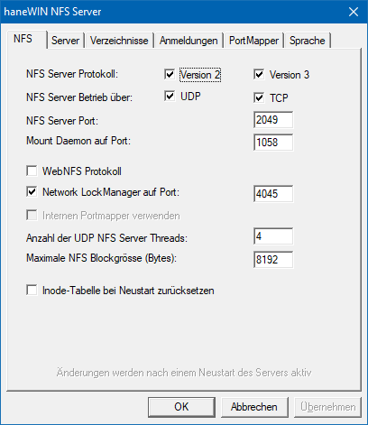
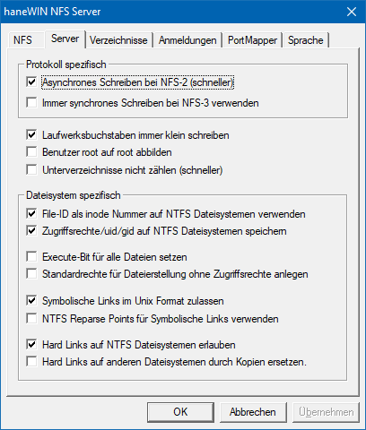
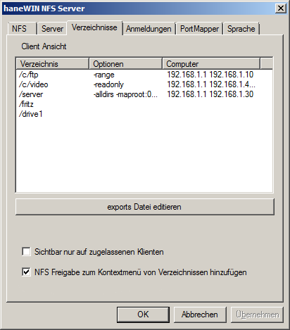
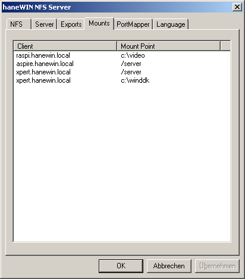
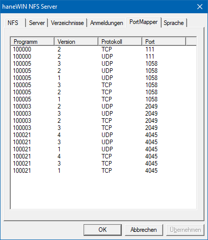
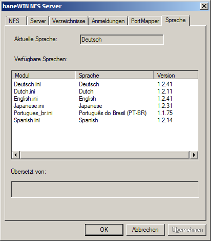
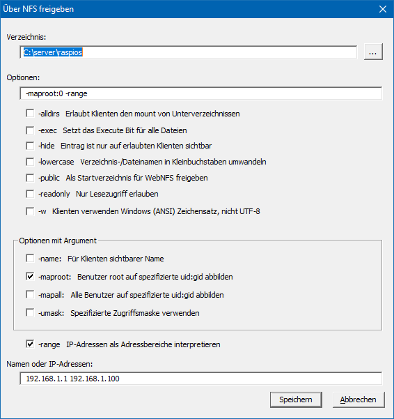

haneWIN NFS Server |
Aktualisiert: für 1.2.58 März 2021Übersicht
Installation
Implementierung
Benutzung
Implementierung
VerfügbarkeitÜbersicht
Die Software implementiert einen NFS Server nach RFC 1813 (NFS 3 Protokoll), RFC 1094 (NFS 2 Protokoll), RFC 2055 (WebNFS Protokoll) und NLM nach der XNFS Spezifikation.
Ein SunRPC PortMap Daemon nach RFC 1057 ist als unabhängiger Dienst realisiert, so dass der NFS Server auch mit einem vorhandenen PortMapper eingesetzt werden kann.Der NFS Server ist als Dienst für Windows XP/Vista/20xx/7/8/10 implementiert. Der NFS Server kann über ein Kontrollfeld der Systemsteuerung überwacht werden.
Der NFS-Server wird auch als portable Anwendung mit optionalen integrierten PortMap-Daemon bereitgestellt.Sowohl Dienst als auch Anwendung sind als 32- und 64-Bit Version implementiert.
Ziel der Implementierung ist nicht eine alternative Vernetzungsmöglichkeit von Windows-Rechnern, sondern Unix-Systemen mit Standardkonfiguration einen Zugriff auf Festplatten unter Windows zu erlauben. (Auslagerung, Weiterverarbeitung von Daten, die auf dedizierten Unix-Systemen erfasst wurden, u.s.w.).
Da der Server Hardlinks, Softlinks und Geräte unterstützt, kann er zum Ausführen laufwerkloser Unix-Clients von einem Windows System verwendet werden.
Installation
- Voraussetzungen
- Computer mit Windows XP/Vista/20xx/7/8/10.
- Installation der NFS Servers unter Windows XP/Vista/20xx/7/8/10
- Installieren Sie die Software über das Setup Programm.
- Legen Sie für den PortMap Daemon und den NFS Server eine Firewallregel an. Ein Beispiel dazu finden Sie in der Datei firewall.bat. Dieses Beispiel erlaubt den Zugriff auf den NFS Server aus dem lokalen Subnetz.
- Über das Kontrollfeld NFS Server kann der NFS Server Dienst konfiguriert und kontrolliert werden. Änderungen der Einstellungen im Kontrollfeld können nur mit Administratorrechten durchgeführt werden. Änderungen von NFS Version, Port und anderen Optionen unter dem Reiter NFS werden erst nach einem Neustart des Server aktiv. Nur wenn das Kontrollfeld mit Administratorrechten ausgeführt wird und eine Verbindung zum Dienst herstellen kann, kann der NFS Server Dienst konfiguriert werden.
- In der Ansicht der exportierten Verzeichnisse können über das Kontextmenü Verzeichnisse hinzugefügt, bearbeitet oder gelöscht werden. Alternativ kann mit dem exports-Editor unter Einstellungen-Verzeichnisse eine exports-Datei (Format wie unter Unix, Anmerkungen dazu im nächsten Abschnitt) mit den Verzeichnissen, die über NFS zugänglich gemacht werden sollen, erstellt werden.
- Nutzung des NFS Servers als Anwendung
- Extrahieren Sie aus dem zip-Archive den Ordner nfsd, starten Sie im Ordner nfsd die Anwendung für 32 oder 64 Bit.
- Legen Sie für den NFS Server eine Firewallregel an. Ein Beispiel dazu finden Sie in der Datei firewall.bat. Dieses Beispiel erlaubt den Zugriff auf den NFS Server aus dem lokalen Subnetz.
- In der Ansicht der exportierten Verzeichnisse können über das Kontextmenü Verzeichnisse hinzugefügt, bearbeitet oder gelöscht werden. Alternativ kann mit dem exports-Editor unter Einstellungen-Verzeichnisse eine exports-Datei (Format wie unter Unix, Anmerkungen dazu im nächsten Abschnitt) mit den Verzeichnissen, die über NFS zugänglich gemacht werden sollen, erstellt werden.
Implementierung
NFS erfordert die Nummerierung von Dateien über sogenannte Inodes, wie es bei den Unix-Dateisystemen üblich ist. Entsprechende Inodes werden in einer Datei inodes.nfs(im NFS-Server Programmverzeichnis) für alle Windows-Dateien erzeugt und verwaltet. Je nach Festplattengröße kann diese Datei auf mehrere MBytes anwachsen.
Auf NTFS Dateisystemen kann ab Windows 7 die sogenannte "file-id" als Inode verwendet werden. Da diese IDs nur auf einem Dateisystem eindeutig sind, schlägt der Zugriff auf Unterordner fehl, die als sogenannte reparse-points die Einbindung weiterer Dateisysteme transparent ermöglichen. Bei Verwendung der "file-id" muss deshalb jedes Dateisystem von einem Client separat "gemountet" werden. Die erfolgt bei "reparse-points" automatisch durch den Server.
Auf FAT / FAT32-Volumes, SMB-Volumes oder anderen Laufwerken wird immer die implementierte interne Inode-Tabelle des Servers verwendet.WebNFS bietet eine alternative Zugriffsmethode zum mount Protokoll an. Der Server bietet dazu zwei Startvarianten:
- Um ein erstes Dateihandle anzufordern kann ein Client einen Pfad aus der exports-Datei als Mehrkomponentenstartpfad verwenden.
- Wenn die Option -public für einen exports Eintrag eingetragen wurde, ist der WebNFS-Zugriff auf diesen Eintrag in der exports-Datei beschränkt und der Mehrkomponentenpfad muss das Verzeichnis oder ein Unterverzeichnis des Eintrages sein.Zur Vereinfachung enthält der Server keine Benutzerabbildung zwischen Windows Benutzernamen und Unix UIDs und verwendet keine ACL's für die Abbildung der Zugriffsrechte.
Der aktuelle Unix-Benutzer wird als Besitzer der Windows-Dateien zurückgegeben. Besitzerzugriffsrechte werden basierend auf den Windows-Attributen readonly und hidden gesetzt.
Unter Unix ausführbare Dateien werden vom NFS-Server im Windows Dateisystem durch das hidden -Attribut gekennzeichnet. Für die Unix-Gruppen- und Weltzugriffsrechte wird eine einstellbare Standardmaske (Voreinstellung: 022) auf die Zugriffsrechte des Besitzers angewendet. Die Maske kann je exportiertem Verzeichnis mit der Option -umask konfiguriert werden.Spezielle Dateien und Eigenschaften, wie Unix-Softlinks und SUID-Bit, werden vom NFS-Server im Windows Dateisystem durch das system -Attribut gekennzeichnet. Unter Windows 7 und höher kann der Server NTFS hard-links und reparse points verwenden, um hard-links und symbolische Links für Unix zu implementieren.
Auf NTFS-Dateisystemen können Dateiattribute und Benutzer-/Gruppenkennung auch gespeichert werden. Dies ist aber komplett unabhängig von den Windows Zugriffsberechtigungen.
Die exports-Datei folgt dem Unix-Format. Pfadangaben müssen in Windows Notation mit einem Laufwerksbuchstaben oder eine Volume Spezifikation beginnen, z.B.
C:\unix
\\?\Volume{6ca75309-178c-11e6-b0b3-806e6f6e6963}
SMB-Freigaben können ebenfalls vom NFS-Server exportiert werden. Diese Verzeichnisse MÜSSEN die UNC-Pfadangabe in der exports-Datei verwenden, da Laufwerksbuchstaben nur auf Benutzerebene verfügbar sind.
Es gibt die folgenden Optionen:
-name:<sharename> weist dem exportierten Pfad einen Namen zu über den ein mount erfolgen kann. -alldirs erlaubt es den Klienten neben dem Verzeichnis ein beliebiges Unterverzeichnis zu mounten. -hide der exports Eintrag ist nur auf zugelassenen Klienten sichtbar. -i32 bei Verwendung der 64 Bit file id wir die Inodenummer auf 32 Bit reduziert. -umask:<mask> legt die Zugriffsmaske für group und world auf dem Dateisystem fest, Voreinstellung 022. Bei Speicherung der Attribute auf NTFS gilt dies nur für unter Windows angelegt Dateien. -readonly erlaubt nur Lesezugriff -public Zugriff über WebNFS Protokoll. -lowercase alle Dateinamen werden auf Kleinbuchstaben umgesetzt. -exec bei allen Dateien wird das x Bit in den Zugriffsrechten gesetzt. Bei Speicherung der Attribute auf NTFS gilt dies nur für unter Windows angelegt Dateien. -mapall:<uid>[:<gid>] alle Unix Benutzer und Gruppenkennungen werden auf die angegebene Benutzerkennung <uid> und Gruppenkennung <gid> abgebildet. -maproot:<uid>[:<gid>] Zugriffe von der privilegierten Unix Benutzerkennung root werden auf die angegebene Benutzerkennung <uid> und Gruppenkennung <gid> abgebildet. Ohne eine eingetragene Abbildung wird die Benutzerkennung root immer auf den Benutzer NOBODY abgebildet. -range fasst die angegebenen IP-Adressen als von-bis Adresspaare auf und erlaubt allen Klienten in diesem Bereich Zugang (flexibler als die Unix -net Option). Ein Pfadname der Leerzeichen enthält muss in Anführungszeichen gesetzt werden.
z.B. c:"\Eigene Dateien" ...Ein Verzeichnis kann mehrfach aufgeführt werden und verschiedenen Klienten unterschiedliche Rechte gewähren.
Auf Klientseite ist beim mount-Befehl auch für Laufwerke die Unix-Notation zu verwenden:
C: --> /c
D:\nfs --> /d/nfs
z.B.: Windows Verzeichnis D:\nfs unter /mnt/nfs mounten:
mount -t nfs 192.168.1.4:/d/nfs /mnt/nfsEin mount von SMB Netzwerklaufwerken erfolgt unter Unix mit der Notation:
\\server\share --> //server/share
z.B.: Windows Verzeichnis \\amilo\nfs unter /mnt/nfs mounten:
mount -t nfs 192.168.1.4://amilo/nfs /mnt/nfsMit der -name Option kann dem Windowsverzeichnis ein alternativer Name zugewiesen werden.
z.B.: Windows Verzeichnis D:\EigeneDateien\musik\mp3 wird mit der Option -name:mp3 exportiert.
Ein mount kann dann unter Unix statt über
mount -t nfs 192.168.1.4:/d/EigeneDateien/musik/mp3 ...
einfach über
mount -t nfs 192.168.1.4:/mp3 ...
erfolgen. Der Pfad zum Windowsverzeichnis bleibt damit unsichtbar für die Unix-Benutzer.
Benutzung
Die InfoBox wird nur beim Start des Kontrollfeldes der nicht registrierten Version angezeigt.Einsatz des Servers als Dienst unter Windows XP/Vista/20xx/7/8/10
PortMap Daemon und NFS Server sind als Dienst implementiert. Die Startmenüeinträge zur Installation und zur Entfernung der Dienste sind Verweise auf die folgenden Befehle:
- Der PortMap Daemon wird mit dem Befehl
PMAPD -install
installiert und wird dann automatisch gestartet. Über das Kontrollfeld Dienste kann der Dienst jederzeit gestoppt und neu gestartet werden.- Der NFS Server Dienst wird mit dem Befehl
NFSD -install PMAPDaemon
installiert und wird dann automatisch gestartet. Der NFS Server kann nur gestartet werden, wenn ein PortMap Daemon aktiv ist. Mit diesem Befehl wird deshalb überprüft ob der Dienst PMAPDaemon aktiv ist. Wenn ein PortMap Daemon eines anderen Herstellers eingesetzt wird, ist der Dienstnamen dieses PortMap Daemons anzugeben. Ohne Angabe eines Dienstnamens wird keine Abhängigkeitsüberprüfung durchgeführt. Über das Kontrollfeld Dienste kann der Dienst jederzeit gestoppt und neu gestartet werden.- Mit dem Befehl
PMAPD -remove
bzw.
NFSD -remove
wird der PortMap Daemon oder der NFS Server Dienst beendet und entfernt.Das NFS Server Kontrollfeld
- Dienst
- Die Einträge erlauben das Starten und Stoppen des Dienstes
- Protokoll
- Zeigt die Protokolldatei des Servers an.
- Einstellungen
- NFS

Der Betrieb des Servers kann auf TCP oder UDP, in der Version 2 und/oder 3 und auch auf alternativen Ports erfolgen. Wird NFS-2 deaktiviert gilt dies auch für mount version1 und NLM version 1. Wird NFS-3 deaktiviert gilt dies auch für mount version 3 und NLM version 4. Wird UDP oder TCP deaktiviert gilt dies auch für das mount und NLM Protokoll.
Der NFS Server arbeitet Multithreaded. Für TCP Zugriffe werden pro Verbindung zwei Threads erzeugt. Bei UDP Zugriffen wird die vorgegebene Anzahl von Threads zur Bearbeitung der Anfragen gestartet.
Die NFS Blockgrösse legt die maximale Paketgrösse über UDP fest. Bei mehr als 1460 Bytes werden Pakete über Ethernet fragmentiert. Die Fragmente können ohne Bestätigung übertragen werden, bei einem Fragmentverlust muss allerdings das komplette Paket neu übertragen werden.
Um die interne Inode-Datenbank zu bereinigen, kann sie beim Serverstart zurückgesetzt werden. Da in diesem Fall nach einem Neustart des Servers neue Inode-Nummern vergeben werden, müssen noch angebundene UDP Klienten erneut mounten.
- Server

Asynchrones Schreiben bei NFS-2: Der Server wartet mit der Bestätigung NICHT bis die Daten abgespeichert wurden. Dies entspricht NFS-3 mit write Option UNSTABLE.
Synchrones Schreiben bei NFS-3: Der Server wartet mit der Bestätigung immer bis die Daten abgespeichert wurden und bestätigt dies mit FILE_SYNC. Dies entspricht dem Verhalten von NFS-2.
Normalerweise wird der Benutzer "root" (uid 0) auf die Zugriffrechte des Benutzers NOBODY gesetzt. Mit der Option Benutzer root auf root abbilden kann dies für alle exportierten Verzeichnisse abgeschaltet werden. Für ein einzelnes Verzeichnis kann dies mit der Option -maproot:0 für einen Eintrag in der exports Datei geändert werden.
Standardrechte bei Dateierstellung ohne Zugriffrechte anlegen: Linux Klienten können Dateien ohne jegliche Zugriffrechte anlegen beschreiben. Unter Windows wird die Datei zwar erstellt es ist aber kein Schreibzugriff auf die Datei möglich. Mit dieser Option werden in diesem Fall die Standardeinstellungen bei der Dateierstellung verwendet.
Auf nativen NTFS Dateisystemen kann die sogenannte "file-id" als Inode ab Windows 7 verwendet werden. In diesem Fall wird keine Information in der "inodes.nfs" Datei gespeichert.
Auf nativen NTFS Dateisystemen können die Zugriffsrechte, uid und gid einer Unix Datei gespeichert werden(nur 16-Bit je UID und GID). Damit wird eine fast vollständige Transparenz für die Clients erzeugt, ein Betrieb von diskless clients ist damit problemlos möglich. Es sind bis zu 10 Namen erlaubt, die sich nur in Gross- und Kleinbuchstaben unterscheiden. Die Speicherung der Attribute erfolgt unter NTFS als "creation-time" nicht in einem "alternative stream", damit muss eine Datei zum Lesen der Attribute nicht geöffnet werden
Für ausführbare Dateien wird das hidden -Attribut verwendet. Je nach Windows Einstellung sind die Dateien damit unter Windows nicht sichtbar. Falls dies unerwünscht ist, kann mit der Verwendung der Option Execute-Bit immer setzen die Verwendung des hidden-Attributes abgeschaltet werden. Für einzelne Einträge in der exports-Datei kann alternativ die -exec Option verwendet werden.
- Verzeichnisse

zeigt die aktuell vom Server exportierten Verzeichnisse aus Klientensicht an (entspricht dem unix Befehl showmount -e) und erlaubt das direkte bearbeiten der exports-Datei.
Exports Einträge sind auf allen Klienten sichtbar. Zur Verbesserung der Sicherheit kann dies auf die erlaubten Klienten eingeschränkt werden.
- Anmeldungen

zeigt die derzeit angemeldeten Klienten aus Klientensicht an (entspricht dem unix Befehl showmount).
Damit die Anmeldungen von UDP Klienten bei Neustart des Servers erhalten bleiben werden die Einträge in der Datei mounttab gespeichert. Dies kann allerdings dazu führen, dass Klienten, die sich nicht abmelden, selbst nach Beendigung und nach einem Neustart des Servers immer noch als angemeldet angezeigt werden.
- Portmapper

zeigt die unter dem SunRPC PortMapper registrieren Programme an.
- Sprache

Erlaubt die Auswahl der Sprache der Benutzeroberfläche. Sprachmodule für alte Versionen können weiter verwendet werden, sie können allerdings unvollständig sein. Neu Sprachen können durch eine entsprechende Sprachdatei im Unterverzeichnis "languages" hinzugefügt werden. Neue Sprachdateien können am einfachsten durch Kopie einer vorhandenen Sprachdatei und Bearbeitung mit einem Editor erstellt werden.
- Ansicht
Es kann entweder die Liste der exportierten Verzeichnisse oder der angemeldeten Klienten angezeigt werden. Angemeldete Klienten können mit ihrer IP-Adresse oder ihrem Namen angezeigt werden. Wenn das Kontrollfeld mit Administratorrechten gestartet wurde können über das Kontextmenü Verzeichniseinträge eingefügt, bearbeitet oder entfernt werden.

Der Server verwendet in der Voreinstellung den Zeichensatz UTF-8. Für Linux Klienten ist UTF-8 die beste Wahl. Falls erforderlich kann der Zeichensatz für einen Eitrag auf Windows ANSI umgeschaltet werden.
Auch nach dem Entfernen von Einträgen aus der Liste der exportierten Ordner können bereits verbundene Klienten weiterhin auf den Server basierend auf entfernten Einträgen zugreifen. Neue Klienten können sich nur auf Basis der aktualisierten Liste anmelden.
Die Liste der Anmeldungen zeigt Verzeichnis, Verbindungsart und Klient. Mit Administratorrechten kann über das Kontextmenü eines Eintrages eine Verbindung getrennt werden.
- Hilfe
- startet den HTML-Browser mit der Dokumentation.
- Registrieren
- Über diesen Dialog wird die Software registriert. Geben Sie bitte dort den Lizenzschlüssel und die Lizenzkennung ein. Nach erfolgreicher Registrierung wird unter Hilfe-Info die Lizenzkennung angezeigt.
- Über...
- zeigt Version und Urheberrecht an.
Verfügbarkeit
Die jeweils aktuelle Version des NFS Servers ist unter www.hanewin.net zu finden. Bei Fragen, Problemen oder Anregungen verwenden Sie bitte unser Kontaktformular.